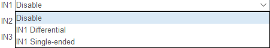
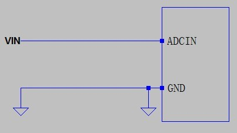
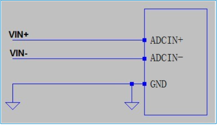
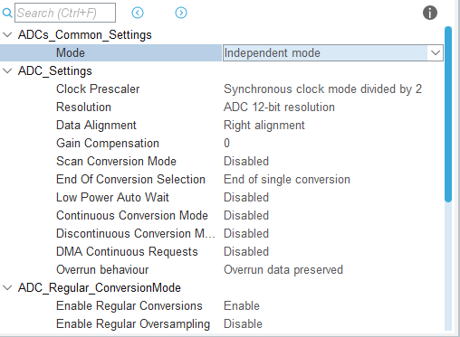
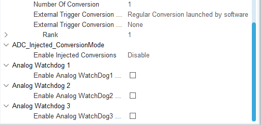
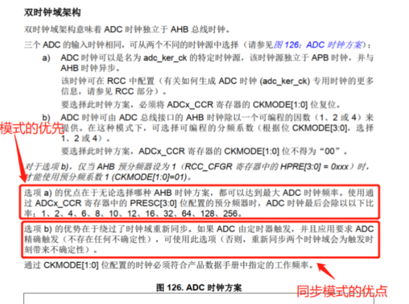
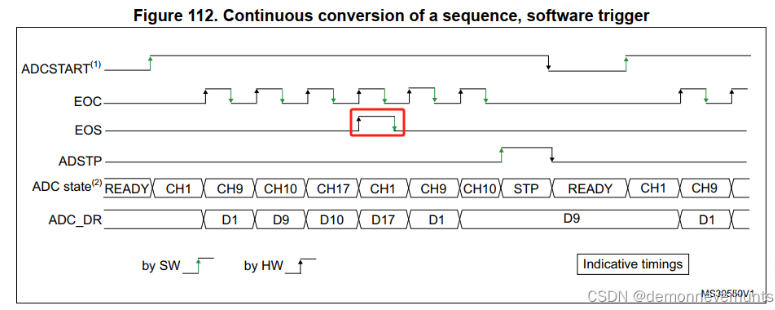
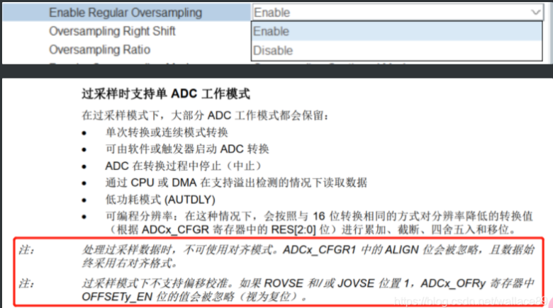
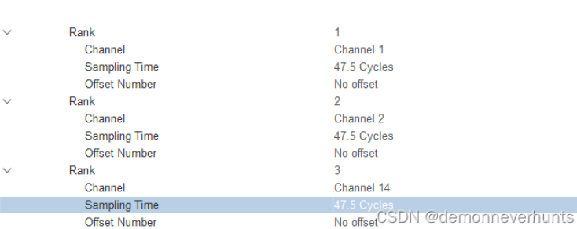
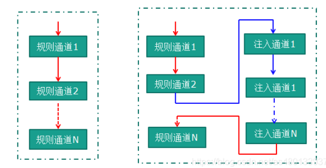

本文章遵循 CC 4.0 BY-SA 版权协议，转载请附上原文出处链接和本声明。
我们打开cubemx的配置，配置通道时有如下选择：分别是差分输入和单端输入。

单端输入方式优点就是简单，缺点是如果VIN受到干扰，由于GND电位始终是0V，所以最终采样值也会随着干扰而变化。采样值=VIN（叠加干扰值 ）- 0V
如图所示，单端输入只有一个输入引脚ADCIN，使用公共地GND作为电路的返回端，ADC的采样值=ADCIN电压-GND的电压(0V)。这种输入方式优点就是简单，缺点是如果vin受到干扰，由于GND电位始终是0V，所以最终ADC的采样值也会随着干扰而变化。

差分受到的干扰是差不多的，输入的共模干扰，在输入时会被减掉，从而降低了干扰，缺点就是接线复杂一些。
差分信号 优点：易分辨小信号、抗干扰EMS强；缺点:双线
而差分输入比单端输入多了一根线，最终的ADC采样值=(ADCIN电压)-(ADCIN-电压)，由于通常这两根差分线会布在一起，所以他们受到的干扰是差不多的，输入共模干扰，在输入ADC时会被减掉，从而降低了干扰，缺点就是接线复杂一些。而且需要VIN+和VIN-两路反相的输入信号。
差分输入的是将两个输入端的差值作为信号，这样可以免去一些误差，比如你输入一个1V的信号可电源有偏差实际输入要大0.1.就可以用差分输入1V和2V一减就把两端共有的那0.1误差剪掉了。单端输入无法去除这类误差。



时钟预分频，双时钟域架构。目的是让ADC达到稳定的工作频率[1]（异步时钟模式（Asynchronous clock mode，基于PLL2P时钟）同步时钟模式（Synchronous clock mode，基于AHB时钟）有些型号的单片机则是直接从时钟树专门分出了一个ADC时钟频率配置。

分辨率。不再赘诉。请见上篇
数据对齐。不再赘诉。请见上篇
增益补偿：对所有转换后的数据进行增益补偿。每次转换后，数据根据增益补偿对采样后的数据进行变换。
扫描模式。不再赘诉。请见上篇
转换结束标志选择：指定转换结束后是否产生EOS中断或单次转换结束事件标志（EOC）。有End of single conversion（EOC） 与 End of sequence of conversion（EOS）两种选择。这两个事件会触发中断与DMA。
在多通道转换过程中，如果选择了End of sequence of conversion，会在一组数据转换完成后发出EOS标志，如下图所示。如果不选，则不会置位该标志。

选择EOS目的是等所有通道转换完毕后，产生中断后将全部数据取出来，或者使用DMA将全部数据取出来。
低功耗自动延迟等待模式，可选参数为 ENABLE 和 DISABLE，当使能时，仅当一组内所有之前的数据已处理完毕时，才开始新的转换，适用于低频应用。该模式仅用于 ADC 的轮询模式，不可用于 DMA 以及中断。
是否启用连续转换。不再赘诉。请见上篇 若想使用ADC+DMA的话，必须先使能连续转换模式。
间断模式，再赘诉一下。这里的不连续含义是指每次触发进行一个子组的转换，跟Continuous Conversion Mode的连续含义不一样。例如使能了该配置，该参数的下方就立马出现Number Of Discontinuous Conversions，如果它设为2，且ADC1使能了通道1，2，5，7，10，11的话，那么第一次触发ADC1采样时，就会采样通道1与通道2的值，再一次触发ADC1采样的话，就会采样通道5与通道7值，如此类推。值得注意的是，Continuous Conversion Mode与Discontinuous Conversion Mode不能同时使能，两者不能共存。
DMA连续请求：指定 DMA 请求是否以一次性模式执行(当达到转换次数时，DMA 传输停止)或在连续模式下(DMA 传输无限制，无论转换的数量)。[2]
溢出处理：用于配置ADC转换数据未及时读取，造成溢出时的处理。
转换数据管理模式。不使用DMA的话，不使用DFSDM数字滤波器做后期处理的话，选择Regular Conversion data stored in DR register only即可。其实就是选择存放转换完成的模拟量数据的地方而已。
使能规则转换。使能它才能采集各个通道上的模拟量。
使能规则过采样。

过采样右移。过采样器能将累加的采样值进行右移。有什么用？比如过采样设置15，那么将采集16个值进行累加。接着配置右移动4位的话，相当于将刚才的累加值除以16，得到平均值。不需要在程序里求平均了。当然，如果大家喜欢在程序里求平均值也是可以的。
转换通道数。根据ADC配置的通道数来选择。有多少转换通道就设置几。
选择触发转换的来源：
选择定时器触发时，需要进一步选择触发的沿。选择软件触发时，该项为None。
Trigger detection on the rising edge（上升沿）
Trigger detection on the falling edge（下降沿）
Trigger detection on the rising and falling edge（上升与下降沿）

偏移序号？？不懂。
我们看到，在选择了ADC的相关通道引脚之后，在模拟至数字转换器中有两个通道：注入通道与规则通道。规则通道至多16个，注入通道至多4个。
规则通道相当于你正常运行的程序，看它的名字就可以知道，很规矩，就是正常执行程序。
注入通道可以打断规则通道，听它的名字就知道不安分，如果在规则通道转换过程中，有注入通道进行转换，那么就要先转换完注入通道，等注入通道转换完成后，再回到规则通道的转换流程。类似于中断。

当被ADC转换的模拟电压值低于低阈值或高于高阈值时，便会产生中断。阈值的高低值由ADC_LTR和ADC_HTR配置。
可以防止读取到的电压值超量程或者低于量程，也可以监控CPU温度，防止温度过高，反正是用处多多。
1 | |
有星星的是我觉得写的很好的博客。